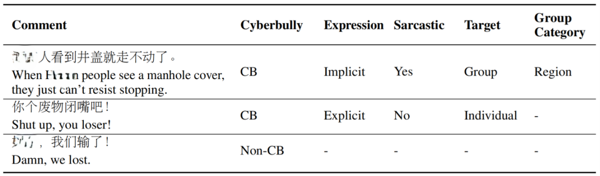
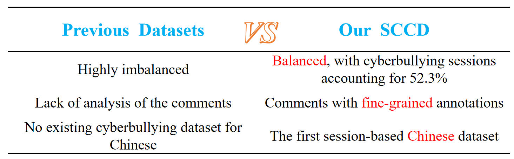
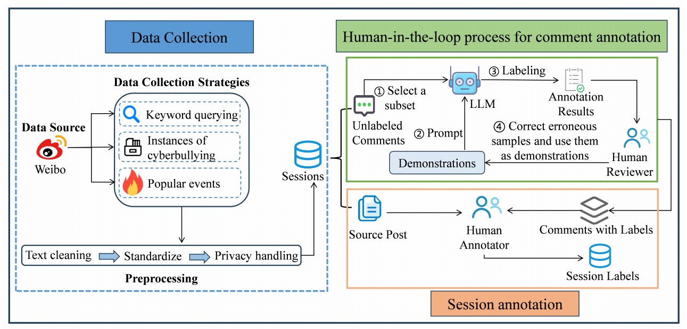
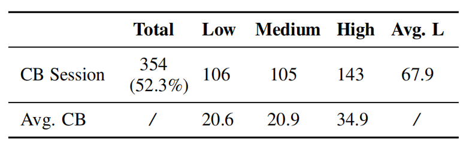

SCCD ( Session-based Chinese Cyberbullying Dataset) is the first publicly available Chinese dataset for cyberbullying detection. SCCD is balanced and contains 677 sessions, with 52.3% classified as instances of cyberbullying. Each cyberbullying session is annotated with an overall severity level categorized as low, medium, or high. All comments are carefully annotated by human and LLM annotators, providing detailed labels that capture multiple aspects of the text. Examples of comments with fine-grained labels are shown below:
Compared to existing cyberbullying datasets, our dataset possesses the following advantages:
We crawled the published sessions from Weibo, a public online social platform, employing three strategies: keyword querying, crawling from typical instances of cyberbullying and popular daily events. Subsequently, we conducted a series of preprocessing steps to refine the data.
The annotation procedure consists of two distinct stages: comment annotation and session annotation. We propose a human-in-the-loop approach to improve collaboration between human annotators and the LLM. Initially, the post is provided to the LLM to establish context. Then, we use demonstration-based prompting for few-shot learning. A subset of comments is labeled by the LLM, verified by human annotators, corrected if needed, and used as demonstrations to further train the LLM. Once all comments in a session are annotated, human annotators review the initial post along with the annotated comments to determine whether the session involves cyberbullying or remains normal. If a session is identified as cyberbullying, human annotators will assess the cyberbullying severity of the session.
The dataset consists of a total of 677 sessions, where 354 are tagged as cyberbullying (further labeled with cyberbullying severity). As it can be seen, our dataset is balanced. Across all 677 sessions, 9,805 comments are labeled as cyberbullying and 29,194 as non-cyberbullying.
